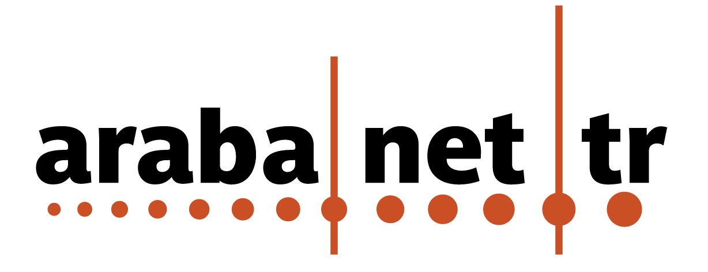

<ion-side-menus enable-menu-with-back-views="false">
	<ion-side-menu-content
		edge-drag-threshold="true">
		<ion-nav-bar class="bar-positive">
			<ion-nav-back-button>
			</ion-nav-back-button>

			<ion-nav-buttons side="left">
				<button class="button button-icon button-clear ion-navicon" menu-toggle="left">
				</button>
			</ion-nav-buttons>
		</ion-nav-bar>
		<ion-nav-view name="menuContent"></ion-nav-view>
	</ion-side-menu-content>

	<ion-side-menu side="left">
		<ion-content>
      

      <ion-list>
				<ion-item nav-clear menu-close class="item-icon-left" href="#/app/carSearch">
					<i class="icon ion-ios-list" style="color: #cb5735;"></i>
					<b>0 km Araba</b>
				</ion-item>
				<ion-item nav-clear menu-close class="item-icon-left" href="#/app/make/3">
					<i class="icon ion-plus-round" style="color: #cb5735;"></i>
          <b>Araba İnceleme</b>
				</ion-item>
        <ion-item nav-clear menu-close class="item-icon-left" href="#/app/carComparisation">
          <i class="icon ion-model-s" style="color: #cb5735;"></i>
          <b>Araba Karsilastirma</b>
        </ion-item>
        <ion-item nav-clear menu-close class="item-icon-left" href="#/app/make/4">
          <i class="icon ion-chatbubbles" style="color: #cb5735;"></i>
          <b>Yakıt Tüketimi</b>
        </ion-item>
        <ion-item nav-clear menu-close class="item-icon-left" href="/carAdmin">
          <i class="icon ion-chatbubbles" style="color: #cb5735;"></i>
          <b>Mesafe Hesaplama</b>
        </ion-item>
        <ion-item nav-clear menu-close class="item-icon-left" href="#/app/questionAndAnswer">
          <i class="icon ion-chatbubbles" style="color: #cb5735;"></i>
          <b>Soru-Cevap</b>
        </ion-item>
        <ion-item nav-clear menu-close class="item-icon-left" href="#/app/taxCalculator">
          <i class="icon ion-calculator" style="color: #cb5735;"></i>
          <b>MTV,ÖTV Hesaplama</b>
        </ion-item>

			</ion-list>
		</ion-content>
	</ion-side-menu>
</ion-side-menus>
